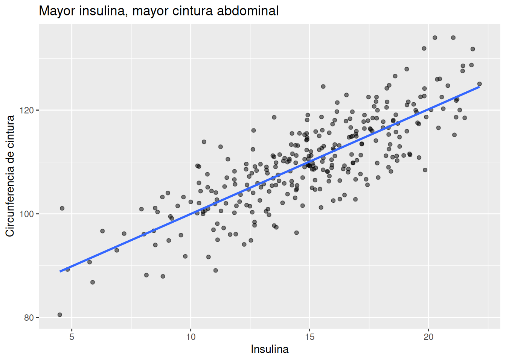
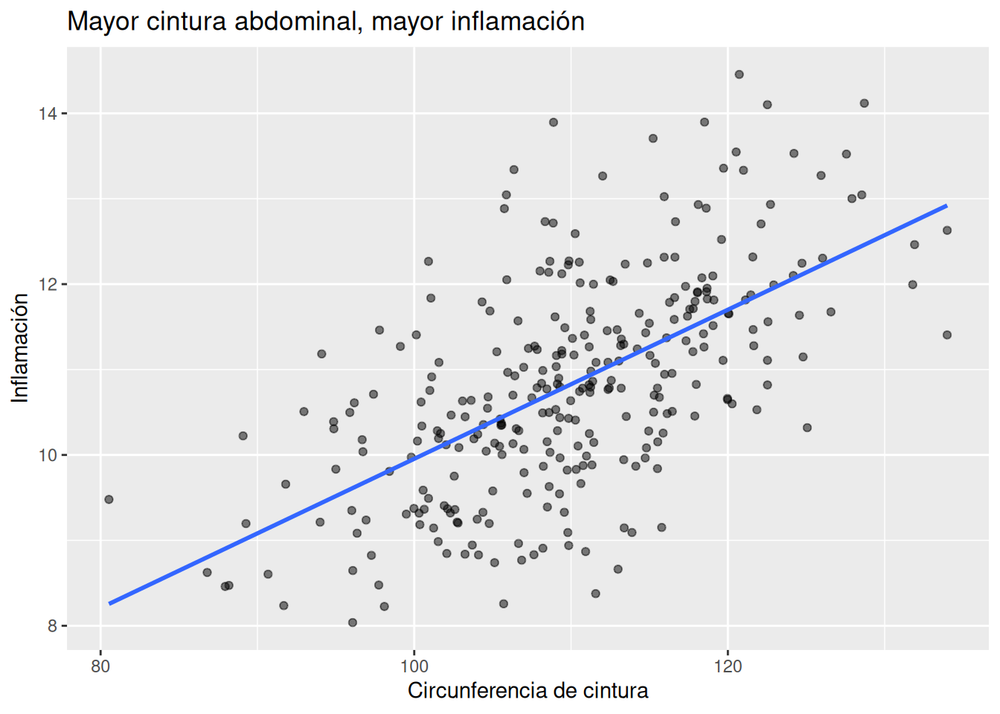
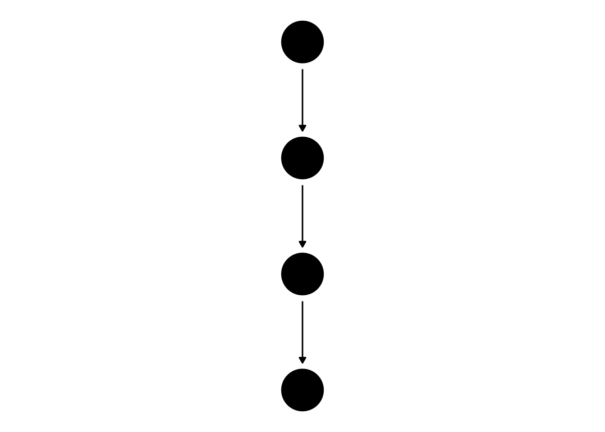
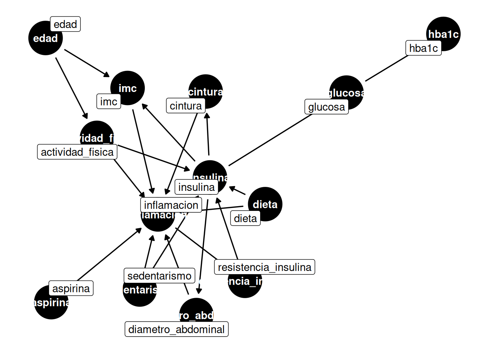
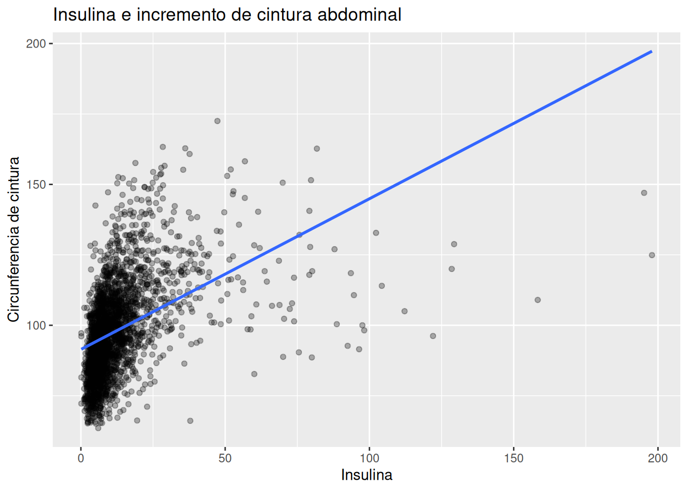
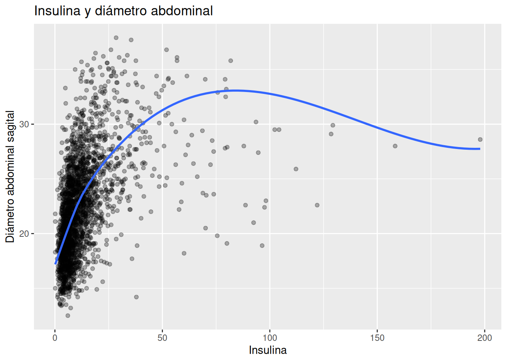
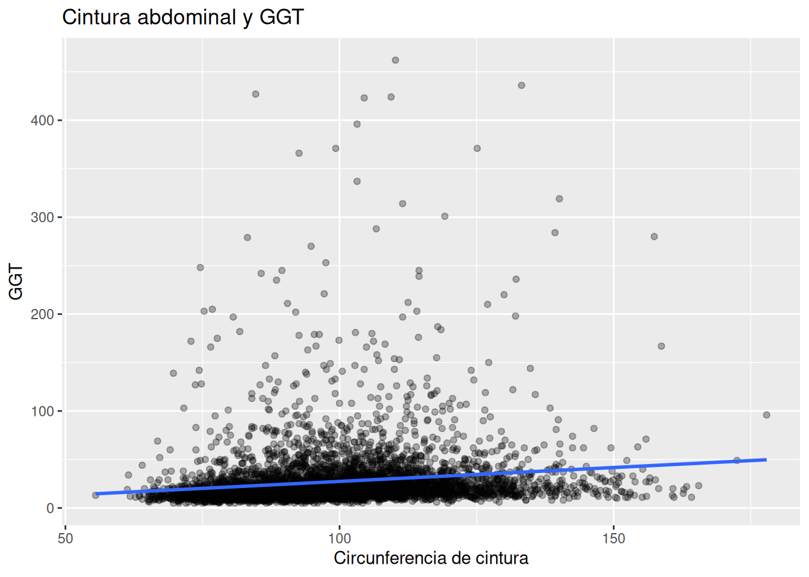
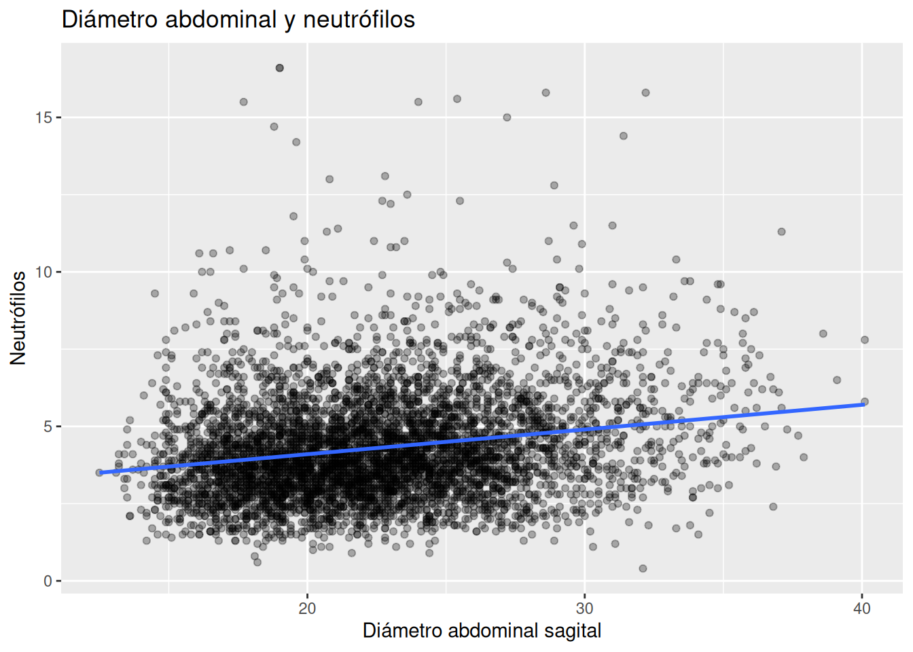
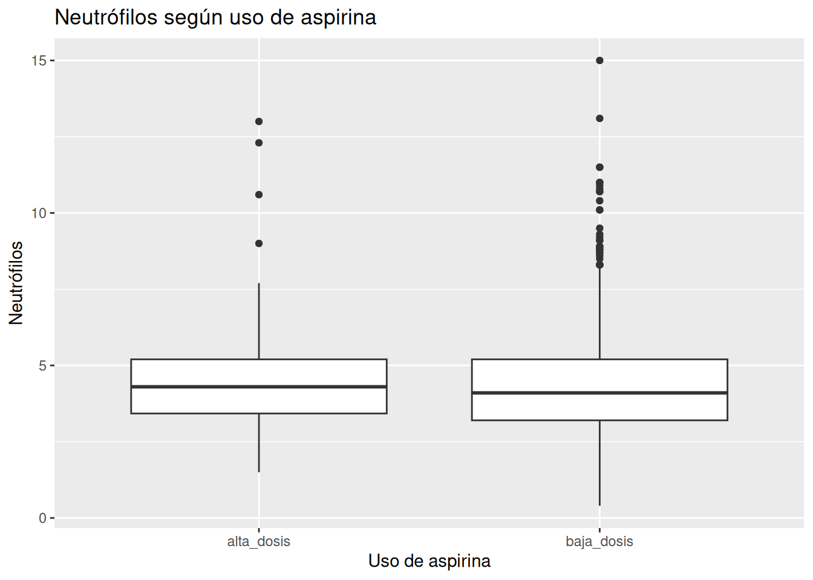

set.seed(123)
# 300 Pacientes
n <- 300
# Simulación de dieta -> insulina -> cintura -> inflamación
df_sim <- tibble(
calidad_dieta = rnorm(n, mean = 0, sd = 1),
# Una mejor dieta (mayor dieta) será igual a una menor insulina
insulina = 15 - 3 * calidad_dieta + rnorm(n, 0, 2),
# Más insulina dará lugar a una mayor cintura
cintura = 80 + 2 * insulina + rnorm(n, 0, 5),
# Mayor cintura da lugar a mayor inflamación
inflamacion = 2 + 0.08 * cintura + rnorm(n, 0, 1)
)9.- Tu Modelo Causal de Obesidad
Objetivo del capítulo
En este capítulo vas a construir un modelo causal explícito de la obesidad.
La idea no es pensar en la obesidad como una sola variable aislada, sino como el resultado de un sistema completo donde intervienen:
- inflamación
- insulina
- grasa visceral
- dieta
- actividad física
- sedentarismo
- metabolismo
Vamos a usar DAGs (Directed Acyclic Graphs, o grafos dirigidos acíclicos) para representar estas relaciones.
No necesitas matemáticas avanzadas para entenderlos. Un DAG es simplemente un dibujo que nos ayuda a pensar mejor.
1. Intuición
¿Por qué necesitamos un modelo causal?
Cuando una persona tiene obesidad, es muy tentador buscar una sola explicación:
- “come mucho”
- “no hace ejercicio”
- “tiene genética”
- “tiene ansiedad”
- “come azúcar”
El problema es que casi nunca existe una sola causa.
La obesidad suele ser el resultado de muchas causas que se influyen entre sí.
Por ejemplo:
- Una mala dieta puede aumentar la insulina.
- La insulina alta puede favorecer el almacenamiento de grasa visceral.
- La grasa visceral puede aumentar la inflamación.
- La inflamación puede empeorar la resistencia a la insulina.
- La resistencia a la insulina puede aumentar todavía más la insulina.
- El cansancio o el sedentarismo pueden empeorar todo el sistema.
Es decir: no estamos viendo una cadena simple.
Estamos viendo una red.
¿Qué es un DAG?
Un DAG es un mapa causal.
Cada variable es un nodo.
Cada flecha representa una posible relación causal.
Por ejemplo:
- dieta → insulina
- insulina → grasa visceral
- grasa visceral → inflamación
La flecha no significa solamente que dos variables están relacionadas.
La flecha significa que creemos que una puede influir sobre la otra.
Por ejemplo:
- Ver que personas con más obesidad tienen más insulina no necesariamente implica que la obesidad cause la insulina alta.
- También podría ser que la insulina alta favorezca el aumento de grasa.
- O que ambas cosas se retroalimenten.
Los DAGs nos obligan a ser explícitos sobre qué creemos que está causando qué.
Pensar en obesidad como un sistema
Durante muchos años, la obesidad fue explicada casi exclusivamente como:
exceso de calorías consumidas menos calorías gastadas
Ese modelo puede ser útil en algunos contextos, pero es demasiado simple.
Desde una visión más fisiopatológica, la obesidad también puede entenderse como el resultado de:
- hiperinsulinemia
- resistencia a la insulina
- inflamación crónica
- grasa visceral
- sedentarismo
- mala calidad de dieta
- alteraciones hormonales
No todas las calorías tienen el mismo efecto hormonal.
No todos los pacientes responden igual a la misma dieta.
Y no todos los pacientes con obesidad tienen el mismo perfil metabólico.
Por eso necesitamos un modelo más rico.
Causa directa y causa indirecta
Una causa directa afecta una variable sin pasar por otra intermedia.
Por ejemplo:
- insulina → grasa visceral
Aquí estamos diciendo que la insulina puede favorecer directamente el almacenamiento de grasa.
Una causa indirecta actúa a través de otra variable.
Por ejemplo:
- sedentarismo → insulina → grasa visceral
Aquí el sedentarismo no necesariamente aumenta la grasa visceral por sí solo.
Puede hacerlo porque favorece resistencia a la insulina, y eso a su vez favorece la acumulación de grasa.
Mediadores
Un mediador es una variable que está en el medio de una cadena causal.
Por ejemplo:
- dieta → insulina → cintura abdominal
En este caso:
- la dieta sería la causa inicial
- la cintura abdominal sería el resultado final
- la insulina sería el mediador
Esto es importante porque a veces una variable parece “causar” otra, pero en realidad lo hace a través de un mecanismo intermedio.
Posibles confusores
Un confusor es una variable que influye tanto sobre la causa como sobre el resultado.
Por ejemplo:
- edad puede influir sobre actividad física
- edad también puede influir sobre obesidad
Entonces, si vemos que personas menos activas tienen más obesidad, parte de esa relación podría explicarse porque también son mayores.
No significa que la actividad física no importe.
Significa que necesitamos pensar cuidadosamente qué otras variables podrían estar influyendo.
2. Ejemplo simple (simulación en R)
Vamos a crear un ejemplo sencillo donde:
- una peor dieta aumenta la insulina
- la insulina aumenta la cintura abdominal
- la cintura abdominal aumenta la inflamación
En esta simulación:
- valores altos de calidad_dieta representan mejor alimentación
- peor alimentación produce mayor insulina
- mayor insulina produce más cintura abdominal
- mayor cintura produce más inflamación
Podemos visualizar algunas relaciones.
# Diagrama de dispersión que relaciona insulina con cintura
ggplot(df_sim, aes(x = insulina, y = cintura)) +
geom_point(alpha = 0.5) +
geom_smooth(method = "lm", se = FALSE) +
labs(
title = "Mayor insulina, mayor cintura abdominal",
x = "Insulina",
y = "Circunferencia de cintura"
)
Y también:
# Diagrama de dispersión que relaciona cintura con inflamación
ggplot(df_sim, aes(x = cintura, y = inflamacion)) +
geom_point(alpha = 0.5) +
geom_smooth(method = "lm", se = FALSE) +
labs(
title = "Mayor cintura abdominal, mayor inflamación",
x = "Circunferencia de cintura",
y = "Inflamación"
)
Este ejemplo es simple, pero ya nos muestra una idea importante:
Las variables forman una historia.
No aparecen de manera aislada.
Representar el ejemplo con un DAG
# Representar el ejemplo de la simulación con un DAG
dag_simple <- dagitty('
dag {
calidad_dieta -> insulina
insulina -> cintura
cintura -> inflamacion
}
')
ggdag(dag_simple, text = FALSE) + # text = False impide que se pongan
# los nombres de los nodos
theme_dag()
3. Ejemplo aplicado con NHANES
Ahora vamos a construir un DAG más realista usando variables de NHANES.
Paso 1 — Seleccionar variables
Vamos a trabajar con estas variables:
Inflamación
- LBDNENO = neutrófilos
- LBDLYMNO = linfocitos
- LBXSGTSI = GGT
- RXD530 = aspirina
Metabolismo
- LBXIN = insulina
- LBXSGL = glucosa
- LBXGH = HbA1c
- Adiposidad
- BMXBMI = IMC
- BMXWAIST = cintura
- BMDAVSAD = diámetro abdominal sagital
Estilo de vida
- PAD680 = actividad física vigorosa
- variables DRQSDT = indicadores dietéticos
Paso 2 — Crear una tabla simplificada
# Crear una tabla simplificada con las variables seleccionadas
nhanes_dag <- df_obesidad %>%
transmute( # transmute crea una nueva tabla con sólo las variables
# que se indican en transmute
imc = BMXBMI,
cintura = BMXWAIST,
diametro_abdominal = BMDAVSAD,
insulina = LBXIN,
glucosa = LBXSGL,
hba1c = LBXGH,
neutrofilos = LBDNENO,
linfocitos = LBDLYMNO,
ggt = LBXSGTSI,
aspirina = RXD530,
actividad_vigorosa = PAD680
)Paso 3 — Construir un DAG clínico
Ahora vamos a crear una primera versión del modelo causal.
# Crear una primera versión del modelo causal
dag_obesidad <- dagitty('
dag {
dieta -> insulina
dieta -> inflamacion
actividad_fisica -> insulina
actividad_fisica -> inflamacion
sedentarismo -> insulina
sedentarismo -> inflamacion
insulina -> cintura
insulina -> diametro_abdominal
insulina -> imc
cintura -> inflamacion
diametro_abdominal -> inflamacion
imc -> inflamacion
inflamacion -> resistencia_insulina
resistencia_insulina -> insulina
glucosa <- insulina
hba1c <- glucosa
aspirina -> inflamacion
edad -> actividad_fisica
edad -> imc
}
')
# Visualizar el modelo causal
ggdag(dag_obesidad, use_labels = "name") +
theme_dag()
Cómo leer este DAG
Este modelo dice que:
- La dieta puede influir tanto sobre inflamación como sobre insulina.
- La actividad física puede mejorar la sensibilidad a la insulina y disminuir inflamación.
- El sedentarismo puede empeorar ambos procesos.
- La insulina puede favorecer el aumento de grasa visceral.
- La grasa visceral puede aumentar la inflamación.
- La inflamación puede empeorar la resistencia a la insulina.
- La resistencia a la insulina puede producir todavía más insulina.
Aunque un DAG no permite dibujar ciclos cerrados perfectos, aquí estamos representando la idea fisiopatológica de un círculo vicioso:
- insulina alta
- más grasa visceral
- más inflamación
- más resistencia a la insulina
- todavía más insulina
Relación entre insulina y adiposidad
Podemos explorar esta relación con NHANES.
# Diagrama de dispersión que relaciona la insulina con la cintura
my_nhanes_dag <- nhanes_dag %>%
filter(
insulina <= 200,
cintura < 200
)
ggplot(my_nhanes_dag, aes(x = insulina, y = cintura)) +
geom_point(alpha = 0.3) +
geom_smooth(method = "lm", se = FALSE) +
labs(
title = "Insulina e incremento de cintura abdominal",
x = "Insulina",
y = "Circunferencia de cintura"
)
También:
# Diagrama de dispersión que relaiona la insulina con el diametro
# abdominal
my_nhanes_dag <- nhanes_dag %>%
filter(
insulina <= 200,
diametro_abdominal <= 40
)
ggplot(my_nhanes_dag, aes(x = insulina, y = diametro_abdominal)) +
geom_point(alpha = 0.3) +
geom_smooth(method = "loess", se = FALSE) +
labs(
title = "Insulina y diámetro abdominal",
x = "Insulina",
y = "Diámetro abdominal sagital"
)
Relación entre grasa visceral e inflamación
# Diagrama de dispersión que relaciona la cintura con la ggt
my_nhanes_dag <- nhanes_dag %>%
filter(
ggt <= 500
)
ggplot(my_nhanes_dag, aes(x = cintura, y = ggt)) +
geom_point(alpha = 0.3) +
geom_smooth(method = "lm", se = FALSE) +
labs(
title = "Cintura abdominal y GGT",
x = "Circunferencia de cintura",
y = "GGT"
)
Y también:
# Diagrama de dispersión que relaciona el diámetro abdominal con
# los neutrófilos
my_nhanes_dag <- nhanes_dag %>%
filter(
neutrofilos <= 20
)
ggplot(my_nhanes_dag, aes(x = diametro_abdominal, y = neutrofilos)) +
geom_point(alpha = 0.3) +
geom_smooth(method = "lm", se = FALSE) +
labs(
title = "Diámetro abdominal y neutrófilos",
x = "Diámetro abdominal sagital",
y = "Neutrófilos"
)
¿Dónde entra la aspirina?
En este libro estamos usando la aspirina como una aproximación imperfecta de intervención antiinflamatoria.
No significa que la aspirina cause menor obesidad directamente.
Más bien, podría representar personas que:
- tienen enfermedad cardiovascular
- reciben tratamiento antiinflamatorio
- tienen un perfil de riesgo metabólico distinto
Por eso, la aspirina puede actuar como una variable interesante dentro del DAG.
# Haz un boxplot comparando neutrófilos según uso de aspirina.
my_nhanes_dag <- nhanes_dag %>%
filter(
aspirina <= 500
) %>%
mutate(
aspirina_cat = case_when(
is.na(aspirina) ~ "no_usa",
aspirina <= 100 ~ "baja_dosis",
aspirina > 100 ~ "alta_dosis"
)
)
ggplot(my_nhanes_dag, aes(x = aspirina_cat, y = neutrofilos)) +
geom_boxplot() +
labs(
title = "Neutrófilos según uso de aspirina",
x = "Uso de aspirina",
y = "Neutrófilos"
)
Ejercicios
Ejercicio 1
Para cada una de las siguientes parejas de variables, escribe una posible historia causal.
Por ejemplo:
- insulina → cintura
- cintura → inflamación
- actividad física → insulina
- sedentarismo → HbA1c
- dieta → glucosa
- glucosa → HbA1c
Para cada una responde:
- ¿Cuál crees que es la causa?
- ¿Cuál crees que es el resultado?
- ¿Cuál podría ser el mecanismo intermedio?
Ejercicio 2
Decide si cada variable actúa principalmente como:
- causa
- mediador
- resultado
- posible confusor
Variables:
- edad
- insulina
- cintura abdominal
- actividad física
- inflamación
- HbA1c
- dieta
- aspirina
- sedentarismo
No existe una única respuesta correcta.
Lo importante es justificar tu razonamiento.
Ejercicio 3
Explica por qué estas dos historias no significan lo mismo:
Historia A:
- actividad física → insulina → cintura
Historia B:
- cintura → actividad física
Pregunta:
¿Cómo cambiaría tu interpretación clínica en cada caso?
Ejercicio 4
Dibuja un DAG simple con estas variables:
- dieta
- insulina
- cintura
- inflamación
Debes incluir al menos:
- una causa directa
- una causa indirecta
- un mediador
Ejercicio 5
Amplía el DAG anterior agregando:
- actividad física
- sedentarismo
- edad
- HbA1c
Pregunta:
- ¿Qué variables parecen más “centrales”?
- ¿Qué variables parecen más “finales”?
- ¿Qué variables parecen estar en el medio de la historia?
Ejercicio 6
Construye un DAG alternativo donde el sueño tenga un papel importante.
Por ejemplo, puedes pensar algo como:
- mal sueño → más apetito
- mal sueño → menos actividad física
- mal sueño → más inflamación
- mal sueño → peor sensibilidad a la insulina
Pregunta:
¿Cómo cambia tu modelo causal cuando agregas sueño?
Ejercicio 7
Crea una tabla simplificada de NHANES usando transmute() con estas variables:
imc = BMXBMI cintura = BMXWAIST insulina = LBXIN glucosa = LBXSGL hba1c = LBXGH neutrofilos = LBDNENO ggt = LBXSGTSI actividad = PAD680
Pregunta:
¿Por qué transmute() puede ser útil cuando quieres trabajar solo con pocas variables?
Ejercicio 8
Haz un gráfico de dispersión entre:
- insulina y cintura
- insulina y diámetro abdominal
- cintura y neutrófilos
- cintura y GGT
Usa:
geom_point(alpha = 0.3)
geom_smooth(method = "lm", se = FALSE)
Pregunta:
- ¿Qué relación parece más fuerte?
- ¿Cuál parece más débil?
- ¿Qué variable parece comportarse como mejor proxy de inflamación?
Ejercicio 9
Haz un boxplot comparando neutrófilos según uso de aspirina.
my_nhanes_dag <- nhanes_dag %>%
filter(
aspirina <= 500
) %>%
mutate(
aspirina_cat = case_when(
is.na(aspirina) ~ "no_usa",
aspirina <= 100 ~ "baja_dosis",
aspirina > 100 ~ "alta_dosis"
)
)
ggplot(my_nhanes_dag, aes(x = aspirina_cat, y = neutrofilos)) +
geom_boxplot()Pregunta:
- ¿Qué grupo parece tener mayor inflamación?
- ¿Crees que la aspirina está disminuyendo inflamación?
- ¿O crees que las personas que usan aspirina ya tienen más enfermedad y riesgo metabólico?
Ejercicio 10
Haz un gráfico de HbA1c contra glucosa.
Pregunta:
- ¿La pendiente es positiva?
- ¿Tiene sentido fisiopatológico?
- ¿Cuál de las dos variables parece más “final” dentro del proceso metabólico?
Ejercicio 11
Imagina dos pacientes:
Paciente A:
- IMC = 32
- cintura muy alta
- insulina alta
- neutrófilos altos
- HbA1c alta
Paciente B:
- IMC = 32
- cintura moderada
- insulina normal
- neutrófilos normales
- HbA1c normal
Pregunta:
- ¿Cuál parece tener más riesgo metabólico?
- ¿Por qué el IMC por sí solo no es suficiente?
- ¿Qué papel parece tener la grasa visceral?
Ejercicio 12
Piensa en una persona sedentaria que empieza a caminar 45 minutos al día.
Describe una posible cadena causal de cambios.
Por ejemplo:
- más actividad física
- menor insulina
- menos grasa visceral
- menos inflamación
- mejor glucosa
Tu respuesta puede escribirse como lista o como DAG.
Ejercicio 13
Haz tu propia versión completa del modelo causal de obesidad.
Debes incluir al menos:
- dieta
- actividad física
- sedentarismo
- inflamación
- insulina
- cintura
- HbA1c
- edad
- sueño
- estrés
Pregunta:
- ¿Qué variable parece iniciar más relaciones?
- ¿Qué variable parece acumular más consecuencias?
- ¿Cuál podría ser el mejor objetivo de intervención clínica?
Ejercicio 14
Escribe un párrafo corto respondiendo esta pregunta:
¿Por qué la obesidad no puede explicarse solamente como “comer mucho y moverse poco”?
Tu respuesta debe incluir al menos tres de estas ideas:
- insulina
- inflamación
- grasa visceral
- resistencia a la insulina
- actividad física
- sueño
- dieta
- hormonas
- sedentarismo
La meta es que expliques la obesidad como un sistema, no como una sola causa.